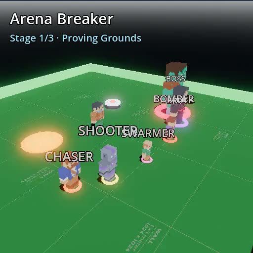
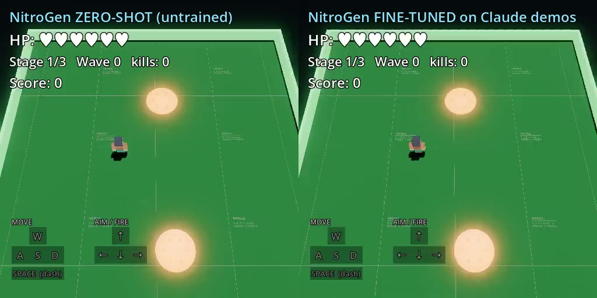

Essay Reading · Game Agents
Teaching NitroGen to Play：用 Claude 当 privileged tutor，给 pixels-only 游戏智能补课
Philo Labs 这篇不是论文，而是一个很有信息量的小实验：把一个只看像素、输出手柄动作的 NitroGen agent 扔进没见过的新游戏。 zero-shot 不会玩；但用 Claude 读取游戏内部结构化状态来打 17 局，再把这些演示蒸馏给 NitroGen，几分钟后它就学会了射击、躲避和过第一波。
0. 一句话结论
痛点：NitroGen 这类 pixels-to-gamepad foundation agent 有跨游戏动作先验，但换一个全新视觉风格的游戏后，zero-shot 技能不一定自动迁移。 核心招：用 Claude 读取 privileged engine state 当 tutor，生成少量高质量手柄轨迹，再只微调 NitroGen 的 action DiT / action head，把“会看结构化状态的慢老师”蒸馏成“只看像素的实时学生”。 效果：原博客报告 zero-shot 平均 0 kills，微调后 2.7 kills；修复游戏碰撞 bug 后，同一组权重提升到 6.8 kills，接近 Claude tutor 的 7.9。 代价：这是单游戏、小样本、工程 demo，不是通用游戏智能证明；教师用了学生推理时拿不到的精确世界状态，评测规模和训练超参也没有完整公开。
- 这篇到底在解决什么
- 它验证的是 low-data post-training 能不能把一个通用游戏动作模型适配到视觉完全没见过、但控制语义类似的新游戏。
- 核心 insight
- 真正有复用价值的不是“Claude 会打游戏”，而是 privileged-state teacher → pixels-only student 这条数据生成链：用引擎内部状态生成便宜演示，再训练一个部署时不依赖内部状态的反应式 agent。
- 和 world model 的关系
- 这不是视频 world model，但它是游戏 world-model 数据集/agent 训练的关键范式：如果你能记录引擎状态、AI blackboard、事件流，就可以构造高质量 teacher，而不是只靠人类慢慢打数据。

1. 文章定位
这篇博客的位置可以概括成：generalist game agent 的 unseen-game adaptation demo。 主体模型 NitroGen 是 pixels → gamepad：输入最近渲染帧，输出一段手柄动作 chunk。 Philo Labs 的问题不是“NitroGen 是否强到能 zero-shot 玩所有游戏”，而是更实际的：
如果新游戏的玩法和训练过的游戏类似，但视觉资产、HUD、关卡完全不同，少量 tutor demonstrations 能不能快速把技能迁移过来？
| 路线 | 输入 | 输出 | 这篇的位置 |
|---|---|---|---|
| 规则/脚本 AI | 游戏状态、碰撞、目标列表 | 确定性动作 | Claude tutor 更像这个层级，但由 LLM 推理产生动作 |
| pixels-only game agent | RGB frame | gamepad chunk | NitroGen student 的部署形态 |
| behavior cloning | 观测-动作演示对 | 模仿人类/教师动作 | 本文的训练机制 |
| policy distillation | 强教师轨迹 | 弱/快学生策略 | 本文最核心的可复用范式 |
2. 方法总览
Arena Breaker engine state
-> structured JSON state: player / enemies / hazards / projectiles / stage
-> Claude tutor: move vector + aim vector + dash
-> record episodes
-> render each state to 256x256 HUD-less frame
-> pair frame with next 18 gamepad actions
-> filter idle segments
-> fine-tune NitroGen action DiT + action head
-> deploy: only RGB frame -> gamepad chunk, real time这个流程最重要的张量/对象对应关系是： \(s_t^{engine}\) 是教师看到的 privileged state； \(o_t\in\mathbb{R}^{256\times256\times3}\) 是学生看到的像素； \(a_{t:t+17}\) 是学生要预测的 18-frame gamepad action chunk。 训练数据就是 \[ \mathcal{D}=\{(o_t, a^{Claude}_{t:t+17})\}_{t=1}^{3276}. \]
原博客给出的数字：17 episodes，3,276 个 “frame + 18-action chunk” 样本；训练 4 epochs；冻结 vision encoder，只训练 Action DiT + action head，约 127M / 494M 参数；单张 A10G 约 7 分钟。
3. 关键机制
3.1 为什么 zero-shot 不行：玩法相同，不等于视觉域相同
旧方法为什么不行：NitroGen 的先验来自互联网 gameplay video。它知道很多 twin-stick / aim-and-shoot 的动作模式，但这些模式是通过像素触发的。新游戏视觉资产、敌人形状、摄像机、HUD、颜色、动画都变了，模型未必知道“这个像素对象就是敌人”“右摇杆该推到这个方向才会开火”。
表现：原文说 zero-shot 时 NitroGen 漂移、乱 dash，aim-stick magnitude 只有 0.025，低于触发射击所需约 0.3，所以几乎不开火，最终 0 kills、stage 1 出局。
机制解释：这不是动作空间不匹配，而是 视觉-动作 grounding 没有对上。Twin-stick 技能在 action prior 里，但新视觉域没有激活正确的动作模式。
3.2 Claude tutor：不是看屏幕，而是读 privileged state
它怎么改：Claude 每一 turn 读取 compact JSON：玩家位置、血量、dash cooldown、敌人相对位置/类型/血量、敌方弹幕、hazards、stage、wave、score 等，然后输出 move vector、aim vector、dash flag。
为什么有效：教师不需要从像素里做 perception。它直接拿到 collision/world state，可以稳定执行 kiting、保持距离、瞄准最近/危险目标、躲避弹幕。 这让数据收集从“找人类打很多局”变成“让 LLM 从引擎状态生成一批专家轨迹”。
代价/限制：教师不是实时玩家，游戏会停下来等 Claude 读状态和思考。它的能力来自作弊式 privileged observation，不能直接部署成公平 game agent。 但这不影响它当 teacher，因为 teacher 的目标是产出高质量 demonstrations。
3.3 蒸馏点：把慢的结构化推理压进快的像素策略
核心不是：让 NitroGen 学会读 JSON。 核心是：让 NitroGen 只从 \(o_t\) 里预测 Claude 在 \(s_t^{engine}\) 下会做出的 \(a_{t:t+17}\)。
这就是典型 privileged learning / policy distillation： \[ a_t^T = \pi_T(s_t^{engine}), \qquad a_{t:t+H}^S = \pi_\theta(o_t). \] 训练时学生看不到 \(s_t^{engine}\)，只用它产生的 teacher action 作为监督信号。
为什么有效：视觉 encoder 已经有通用表示，动作 DiT 已经有 gamepad action 先验；小样本微调只需要把新视觉符号接到已有动作技能上。
3.4 idle filtering 和 HUD-less frames：两个小工程点很关键
idle filtering：如果保留大量无输入片段，behavior cloning 很容易学成“别动”。原文保留至少半数 frame 有真实输入的片段，这是低数据 regime 下防止动作分布塌缩的关键。
HUD-less frames：训练时隐藏屏幕手柄/HUD，防止模型通过 UI 读出动作而不是理解游戏画面。这个点很像机器人里的 action leakage：如果图像里直接显示 controller overlay，训练 loss 会很好，但部署到无 overlay 画面就崩。
4. NitroGen 代码里的实现对应
官方 NitroGen README 明确提醒：当前公开模型是 500M 参数 DiT，只看最后一帧，是 fast-reacting system-1 sensory model；它还不能长程规划、端到端自改进，或完全 zero-shot 玩没见过的游戏。 这个限制和 Philo Labs 的 cold start 结果是一致的。
| 代码模块 | 作用 | 和博客实验的关系 |
|---|---|---|
nitrogen/flow_matching_transformer/nitrogen.py |
主模型：vision encoder、VL self-attention、Action DiT、action decoder | 微调的核心是 action diffusion / action head |
MultiEmbodimentActionEncoder |
把 noisy action chunk + diffusion timestep 编成 hidden tokens | 动作不是单步分类，而是一段连续 chunk 的流匹配采样 |
NitrogenTokenizer |
打包 frame tokens、game id token、action tokens | 博客中的 256px frame + 18-action chunk 对应 tokenizer 的视觉/动作序列 |
InferenceSession.predict |
输入当前 frame，调用 get_action，输出 buttons / left stick / right stick |
部署时 student 只看像素，不再读 engine JSON |
代码里的 flow matching 目标可以写成： \[ x_t=(1-t)\epsilon + t a,\qquad v^\star=a-\epsilon, \] 模型预测 \(\hat{v}_\theta(x_t,t,c)\)，用 MSE 拟合 \(v^\star\)。 推理时从随机动作 chunk 开始，用 Euler step： \[ x_{k+1}=x_k+\Delta t \cdot \hat{v}_\theta(x_k,t_k,c). \] 这里 \(c\) 是视觉上下文 token，\(a\) 是真实 teacher action chunk。
5. 训练和推理流程
| 阶段 | 输入 | 输出 | 注意点 |
|---|---|---|---|
| Teacher rollout | Engine JSON state | move / aim / dash | Claude 可暂停游戏、读精确状态，不是公平实时 agent |
| Dataset build | 渲染帧 + teacher action log | 3,276 个 frame-action chunk 样本 | 过滤 idle，隐藏 HUD/controller overlay |
| Fine-tuning | 256px frame，18-frame action chunk | 微调 Action DiT/action head | 冻结 vision encoder，4 epochs，1x A10G，约 7 分钟 |
| Deployment | 实时 RGB frame | 手柄动作 chunk | 不读 JSON，不暂停游戏 |
6. 实验复盘

| 指标 | Zero-shot | Fine-tuned | Bugfix 后同权重 | Claude tutor |
|---|---|---|---|---|
| Avg kills | 0.0 | 2.7 | 6.8 | 7.9 |
| Aim-stick magnitude | 0.025 | 0.86 | 未报告 | 未报告 |
| Avg score | 10 | 37 | 未报告 | 未报告 |
最有意思的结果不是 2.7 kills，而是 bugfix 后同一权重直接跳到 6.8 kills。 这说明 fine-tuned NitroGen 已经学到了接近正确的战斗策略，只是被游戏碰撞 bug 卡住；它会被围住后打近身敌人，恰好触发了 Claude tutor 不常遇到的 point-blank collision 问题。
批判地看，博客没有公开评测 episode 数、随机种子、学习率、batch size、数据划分、是否多次重复实验。 所以它更像一篇 engineering case study，不是统计意义严格的 benchmark。
【不确定】Claude tutor 的完整 prompt、动作后处理和采样温度没有公开。合理猜测有三种：一是固定启发式 prompt；二是带少量 hand-written safety rules；三是输出后有动作 clipping/smoothing。验证方式：公开 tutor prompt、保存 raw Claude response、比较 post-processed action 和 raw action。
【不确定】Philo Labs 的 fine-tuning 是否完全复用 NitroGen 公开训练代码，还是内部有轻量 wrapper/脚本没有公开。验证方式：公开训练命令、checkpoint diff、optimizer state 和 dataset manifest。
7. 这件事真正说明了什么
它没有证明：NitroGen zero-shot 泛化到任意新游戏；Claude 可以直接替代人类玩家；7 分钟训练可以解决所有视觉域迁移。
它证明得比较扎实：当新任务和预训练技能在 action semantics 上相近时，小规模高质量演示可以快速重连视觉 grounding 和动作先验。 这里的 teacher 可以不是人类，只要它能产生稳定、可模仿、覆盖关键行为的轨迹。
最可复用的 insight：把 expensive reasoning 放在数据生成阶段，而不是部署阶段。 Claude 可以慢，可以作弊，可以读内部状态；学生不能。但学生可以在离线数据里吸收 teacher 的动作分布，最终变成实时 pixels-only policy。
8. 对 UE 多人数据集 / FastWAM 的启发
如果要在 UE 里做多人 world model 数据集，这篇博客给了一个很清楚的 recipe：
UE authoritative state
-> player / NPC / projectile / objective / event / BT blackboard
-> teacher policy: LLM, scripted AI, behavior tree, utility AI, or hybrid
-> record privileged trajectory
-> render per-agent RGB/depth/semantic/egocentric streams
-> train pixel-only or partial-state student
-> evaluate zero-shot and low-data adaptation| 该记录什么 | 为什么 | 可训练任务 |
|---|---|---|
| Privileged game state | 可产生高质量 teacher，也可做诊断 | teacher distillation、state-to-action、counterfactual rollout |
| 每个 agent 的 RGB / depth / semantic view | 部署时 student 通常只能看局部观测 | pixels-only policy、world model、belief state learning |
| Behavior Tree / StateTree / blackboard | 比低层动作更接近 intent/progress | intent token、task progress prediction、subgoal inference |
| 事件流 | 多人因果不该只藏在视频里 | hit/death/pickup/capture prediction、reward model |
对 FastWAM 或具身 one-shot 模仿，类似设计是： 用 privileged teacher 读完整状态生成少量专家执行，再训练 student 只从视觉和任务描述恢复 action / progress / latent goal。 这和之前讨论的 intent token 可以接起来：teacher 的 blackboard、目标选择、阶段标签可以变成学生的中间监督，而不只是最终动作。
9. 可复现清单
- 确认 NitroGen checkpoint 和代码版本；官方 repo 当前入口是
scripts/serve.py和scripts/play.py。 - 实现游戏侧 state exporter：player、enemy、projectile、hazard、cooldown、score、stage/wave。
- 固定 teacher prompt，并保存 raw response、parsed action、post-processed action。
- 录制 episode 时同步保存 frame、state、action、reward/event，避免只留视频。
- 把 frame resize 到 NitroGen 期望的 256px 输入；去掉 HUD/controller overlay。
- 做 idle filtering，防止 BC 学成 stationary policy。
- 冻结 vision tower，先只调 action DiT/head；低数据时全量微调更容易过拟合。
- 报告多 seed、多 episode 的 kills、score、survival time、aim magnitude、dash usage。
- 分开评估原关卡、新关卡、bugfix 后同权重，避免把环境 bug 当模型失败。
- 保留失败视频，因为 pixels-only agent 经常能暴露游戏设计/碰撞/奖励漏洞。
10. 改进方向
- 更系统的 teacher ensemble ->Claude + scripted AI + RL bot 混合；收益是覆盖更多策略模式；风险是动作分布不一致；实验看 mixture ablation。
- 加入 state prediction auxiliary loss ->让学生从像素预测敌人/弹幕/hazard latent；收益是增强视觉 grounding；风险是标注 schema 变复杂；实验看 low-data adaptation curve。
- 从单帧扩到短历史 ->NitroGen README 说公开模型只看最后一帧；短历史能处理速度和弹幕轨迹；风险是推理延迟和训练数据更重；实验看 projectile dodge success。
- 把 bug discovery 变成正式指标 ->记录 agent 触发的异常碰撞、卡墙、奖励漏洞；收益是让 game agent 变成 QA 工具；风险是难以区分模型失败和游戏 bug；实验做人类复核。
- 多人版本 distillation ->teacher 读 shared state，student 只看 ego view；收益是适配 UE 多人数据集；风险是 credit assignment 难；实验看 opponent tracking 和协作/对抗成功率。
11. 速读备忘卡
- 这篇是工程实验，不是正式论文。
- NitroGen 是 pixels-to-gamepad，不是视频 world model。
- Zero-shot 失败的关键是视觉 grounding 断了，不是玩法完全不懂。
- Claude tutor 读 privileged JSON state，学生 NitroGen 只看 RGB。
- 17 episodes 变成 3,276 个 frame-action chunk 样本。
- 训练只调 127M / 494M 参数，冻结 vision encoder。
- 核心范式是 privileged teacher 到 pixels-only student 的 policy distillation。
- idle filtering 和 HUD-less frames 是低数据模仿里的关键工程细节。
- 同一权重在 bugfix 后提升很大，说明 agent 还能做游戏 QA。
- 对 UE 数据集最重要的启发：别只录视频，要录 authoritative state、event、blackboard 和每个 agent 的局部观测。